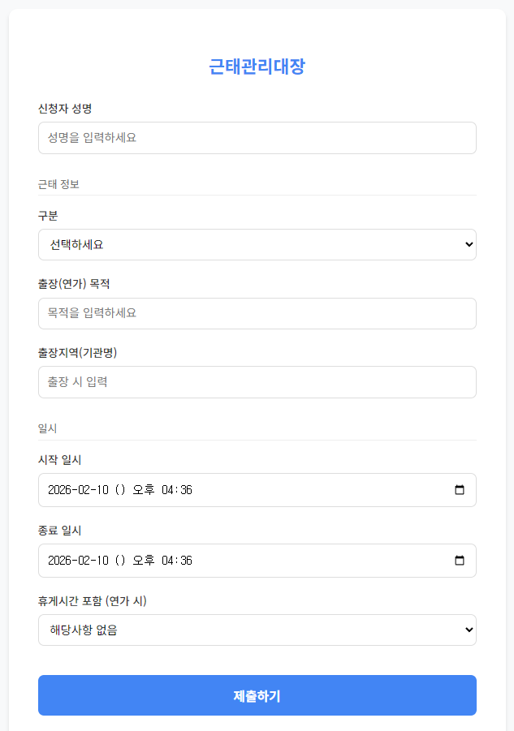
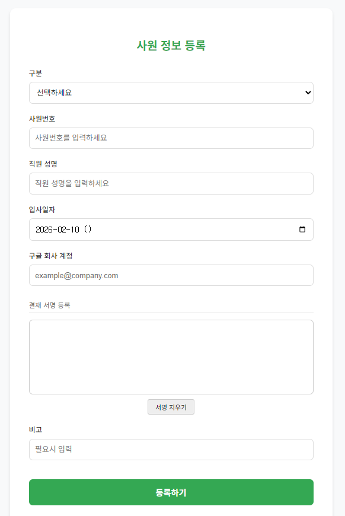

Google Apps Script(GAS) 웹앱으로 제작된 모바일 친화적 입력폼입니다. 직원이 근태 정보를 제출하면 스프레드시트에 자동 저장되고, 근태관리대장과 연가관리대장 서식이 자동으로 생성됩니다.
👤
직원 정보 등록
신규 직원의 기본 정보와 결재 서명을 사전에 등록하여 근태 신청 시 본인 확인 및 서식 자동 완성을 지원합니다.
📝
간편한 근태 신청
성명, 구분(외근/출장/연가 등), 목적, 시작·종료 일시를 입력합니다. 본인 확인을 통해 개인별 연가 잔여일수 확인 및 서명 연동이 가능합니다.
⏰
자동 시간 설정
폼 접속 시 시작·종료 일시가 현재 시각으로 자동 세팅되어 빠르게 제출할 수 있습니다.
☕
휴게시간 처리
연가 시 휴게시간(30분/1시간)을 선택하여 실 근무시간에 자동 반영합니다.
📊
서식 자동 연동
제출된 데이터가 근태관리대장·연가관리대장 시트에 자동 반영되어 별도의 서류 작성이 불필요합니다.
🚀 나만의 근태관리대장 만들기
- 위 스프레드시트 보기 버튼을 눌러 원본 시트를 확인합니다.
- [파일] > [사본 만들기]로 본인의 구글 드라이브에 복사합니다.
- 사본 시트에서 [확장 프로그램] > [Apps Script]를 실행합니다.
- 스크립트 에디터에서 [배포] > [새 배포]를 선택하여 웹앱 URL을 생성합니다.
- 생성된 URL을 직원들에게 공유하면 바로 사용 가능합니다.
Tip: 모바일 홈 화면에 웹앱 URL을 추가하면 앱처럼 바로 접속하여 사용할 수 있습니다.

근태 등록 화면

직원 정보 등록 화면